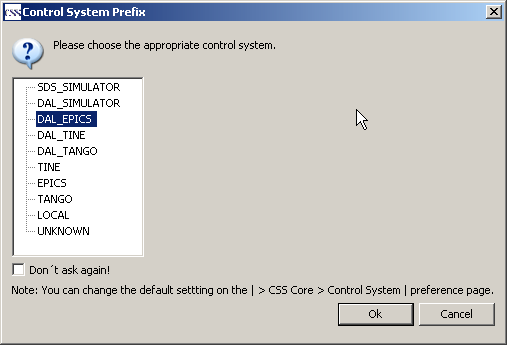
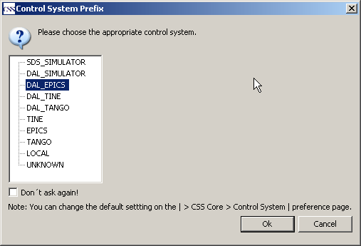
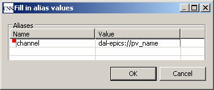

After dropping the object you get a window to select the type of control system to connect the process variable to.

The next window shows a list of all widgets to select the adequate one.

Using the widget palette to add new widgets to the display requires also editing properties to connect it to the control system. The drag and drop support will set these properties automatically. Drag an object related to a process variable from any CSS application in the SDS editor pane. In the screenshot you see an example with the application 'PV Table'.
After dropping the object you get a window to select the type of control
system to connect the process variable to.

The next window shows a list of all widgets to select the adequate one.
In the last window an alias is defined for the process variable. The alias can be used for all properties of the widget to avoid typing the whole process variable name.

The new widget is now initialized with all settings for the process
variable. A simple 'Label' is only connected to the value of the
variable but for a more complex widget like a bar graph are also the
alarm levels, high / low displays, etc. defined.
The initializer for widgets is set in the preference pages:
Select Menu CSS → Preferences...
Open Preference Page CSS-Applications → Display → Default
Schema
With the option 'manual' there will be only the alias for the process
variable set.
The option 'EPICS' sets the initializer that all usual properties for an
epics record is set for the process variable.